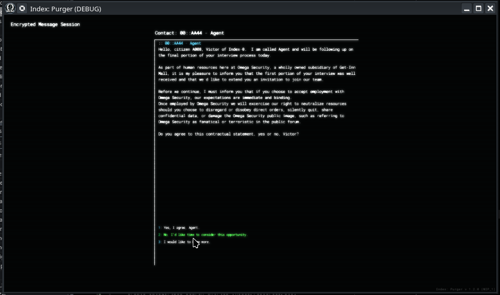
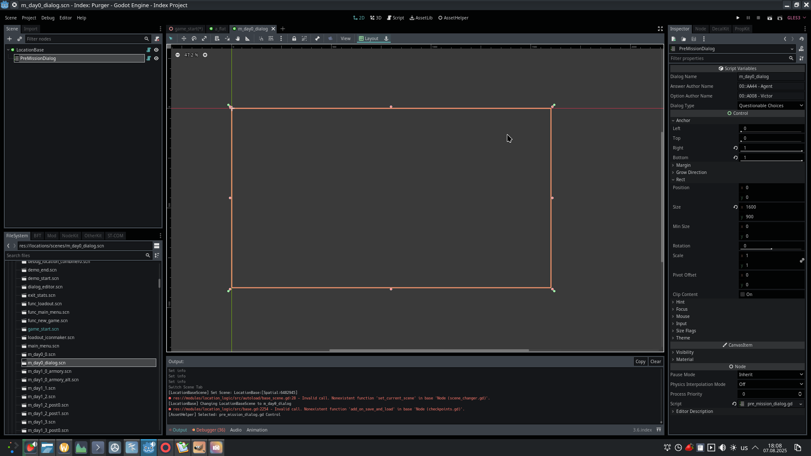

Module: pre_mission_dialog
Documentation last edited: October 23, 2025 at 14:33 UTC
Description
"Pre-Mission Dialog" module creates a dialog UI that uses "Dialogue System's" dialog graph. As the name says, it is useful for cases when you just about to start a mission and probably need to give the player someone to talk about it.

I mean it would make the player feel less lonely, right? Actually not sure about that. In a way, staring at the screen while texting a literal wall or text might make you feel more lonely. Does it matter? That wall of text speaks to you anyway. There's gonna be a literal shootout after this wall of text. Would you feel lonely in a literal shootout? Sometimes I do... because I developed that shit and I know these NPCs are nothing inside. Shit, I guess I should've actually paid attention to describing how it works...
PreMissionDialog
is simply a
Control
-extending node that you can instance in any
LocationBase
and call it a day. In current design, you are supposed to use this thing to turn the entire location into a glorified wall of text *with emotions*.
All dialogs used by
PreMissionDialog
are made in dialog editor of
"dialogue_system"
, so please, consider to take a look there if you want to make a new dialog.

In fact, setup is really easy, mainly you just need to pay attention to exports on the right. That's really it. Now you can do something like 50 shades of Index or something like it. If you will...
General Information
Root directories list
assets, docs, src
Nodes
PreMissionDialog
dialog
option
Classes
Resources
None
Other Scripts
None